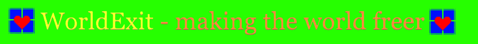

Return
You are the master of your mind, so you can have your opinion on what WorldExit is however I would define it as something to give people information and help them change in some way for the better, despite any problems they may face at first.